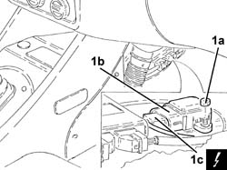

3350E30 LATERAL ACCELERATION AND YAW SENSOR R R
- Path
- Procedures > 33 BRAKING SYSTEM > 3350 DRIVE CONTROL > 3350E VEHICLE DIRECTION CONTROL SYSTEM VDC > 3350E30 LATERAL ACCELERATION AND YAW SENSOR R R
- Kind
- repair procedure (removal / refitting; the operation number is the code)
- Applies to
- all engines; all production periods
- Interactive page
- https://sloeber94.github.io/elrnDB-aGt/en/#/125001385
Applies to: all engines; all production periods
 Removing
Removing
 Refitting
RefittingEnsure that the ignition key is in the OFF position, then disconnect the negative battery terminal (-).
Name | Connector | |
|---|---|---|
- | Battery | See A1B BATTERY ( BATTERY NEGATIVE ) |
Proceed with removal
Op. 7040A65 PASSENGER COMPARTMENT BOX LOCK , ONE , R R
1. Undo the nuts (1a) and remove the lateral acceleration and slew sensor (1b) after disconnecting the electrical connection (1c).
Name | Connector | |
|---|---|---|
1c | Slewing sensor VDC | See K74 YAWING SENSOR |

Applies to: all engines; all production periods
Refitting
RemovingConnect the electrical connection to the lateral acceleration and slew sensor, then refit it in its seating and secure it with its nuts.
Proceed with refitting
Op. 7040A65 PASSENGER COMPARTMENT BOX LOCK , ONE , R R.
Connect the negative (-) battery terminal